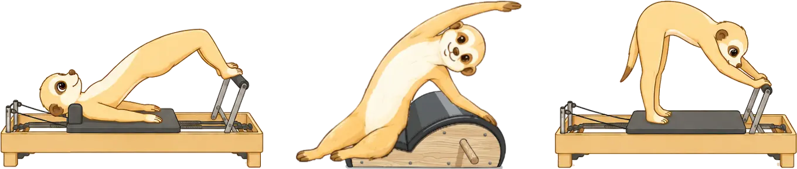

整体と組み合わせる
Re:moveでは、ピラティス単体でのご提供は行っていません。
整体で身体を動きやすい状態に整えてからピラティスを行うことで、
身体の使い方をより効率的に学習・定着させていきます。

ピラティスは、背骨を一つひとつ丁寧に動かしながら、
身体全体の連動性を高めていくエクササイズです。
現代では、長時間のデスクワークやスマートフォンの使用などにより、
背骨を部分的にしか使えていない方も少なくありません。
ピラティスでは、背骨を上下に長く引き伸ばす「エロンゲーション（伸長）」と、
背骨を一つひとつコントロールしながら動かす「アーティキュレーション（分節）」を大切にし、
身体本来のしなやかさを引き出していきます。
背骨の柔軟性とコントロールが高まることで全身が連動し、
より自由で無理のない動きにつながります。
ダンスにおいては、背骨はしなやかな動きや表現力を生み出す重要な土台です。

Re:moveでは、ピラティス単体でのご提供は行っていません。
整体で身体を動きやすい状態に整えてからピラティスを行うことで、
身体の使い方をより効率的に学習・定着させていきます。
ピラティスのエクササイズには、反射の統合ワークで
アプローチする原始反射の統合につながるものがあります。
ピラティスと反射の統合ワークを組み合わせることで、より効率的な変化を目指します。
A.もちろん大丈夫です。
Re:moveでは、お一人おひとりのお身体の状態や運動経験に合わせたパーソナルレッスンを行っています。
ピラティスが初めての方でも安心して受けていただけます。
A.動きやすい服装であれば大丈夫です。
ピラティスウェアでなくても、Tシャツやレギンス、ジャージなど普段の運動着で問題ありません。
A.そう思われる方も多いのですが、Re:moveではピラティス単体のメニューはご用意しておりません。
身体に緊張が強かったり、動きにくさがある状態でピラティスを行うよりも、まず施術で身体のコンディションを整えてから動かすことで、無理なく変化を感じやすくなると考えているためです。
整体とピラティスの配分は、その日の状態やご希望に合わせて都度相談しながら決めていきます。
「ピラティス多めで行いたい」といったご要望も遠慮なくお伝えください。
A.もちろんご利用いただけます。
Re:moveではダンサーのサポートを中心に行っていますが、運動が苦手な方や姿勢が気になる方、肩こりや腰痛が気になる方にもご利用いただいています。
整体とピラティスを組み合わせ、お身体の状態や運動経験に合わせた内容をご提案しますので、初めての方でも安心してご相談ください。
A.もちろん大丈夫です。
ピラティスは身体の柔軟性を競うものではありません。
背骨をはじめとした身体の動きを少しずつ引き出しながら、自分の身体をコントロールすることを大切にしています。
Re:moveでは、整体で身体を整えてから、お身体の状態に合わせて進めますので、身体が硬い方でも安心してご利用いただけます。
A.Re:moveでは、「ダンス上達サポート」「整体×ピラティス」のどちらのメニューでも、お身体の状態や目的に合わせて、さまざまなアプローチを組み合わせながら進めています。
そのため、必要に応じて反射の統合ワークも取り入れ、一人ひとりのお身体に合わせた内容をご提供しています。
「ピラティスが初めてで不安」
「身体が硬くても大丈夫かな？」
「自分にはどのメニューが合うか分からない」
そんな方もお気軽にご相談ください。
ご予約は、予約フォームまたは公式LINEより受け付けています。
ご予約前に確認したいことやご相談がある場合は、
公式LINEからお気軽にお問い合わせください。
Instagramからのお問い合わせをご希望の方は、DMよりご連絡ください。